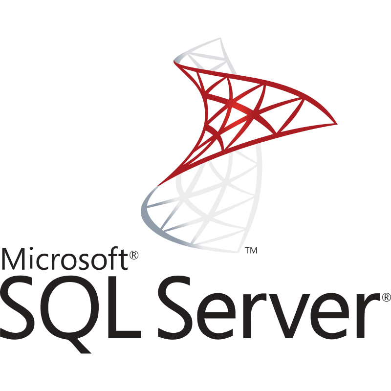
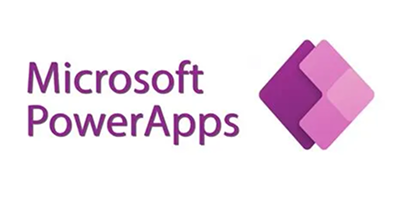
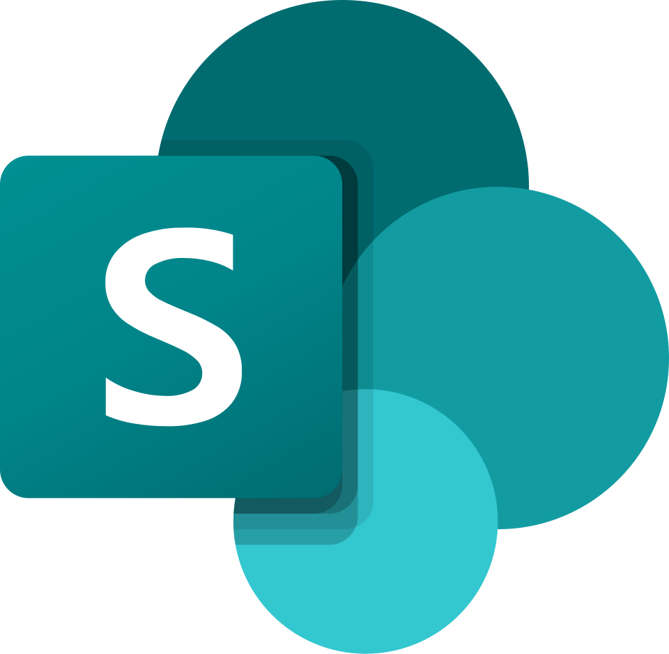

I help UK enterprise and mid-market organizations transform fragile legacy databases into automated, certified Power BI & SQL Server ecosystems—operating Outside IR35 with seamless GMT alignment.
I hold a First-Class Honours degree in Business Intelligence and Data Analytics, providing a rigorous academic foundation to my enterprise consulting.
Over the past 2 years and 4 months of active, project-based delivery, I have focused entirely on the intersection of data engineering and business strategy. I do not simply build dashboards; I architect the underlying semantic models and ETL pipelines required to establish a singular, verifiable source of truth.
Beyond the technical architecture, my background includes leading analytics training and corporate consulting. This dual expertise ensures that the solutions I deploy are not just technically sound, but are actively adopted by operational teams and leadership alike.
Operating as an independent B2B consultant from Gaborone, Botswana (GMT+2), I provide a highly strategic timezone overlap for UK and European enterprise clients.
This geographic positioning ensures seamless, real-time collaboration during your core business hours, alongside the distinct advantage of asynchronous data pipeline execution—meaning complex SSIS integrations and Power BI semantic models are processed overnight, ready for your leadership teams by morning.
By engaging my services on a flexible, offshore contracting basis, organizations immediately bypass the overhead of full-time hires while instantly securing high-level architectural expertise specifically tailored to the Microsoft technical ecosystem.


